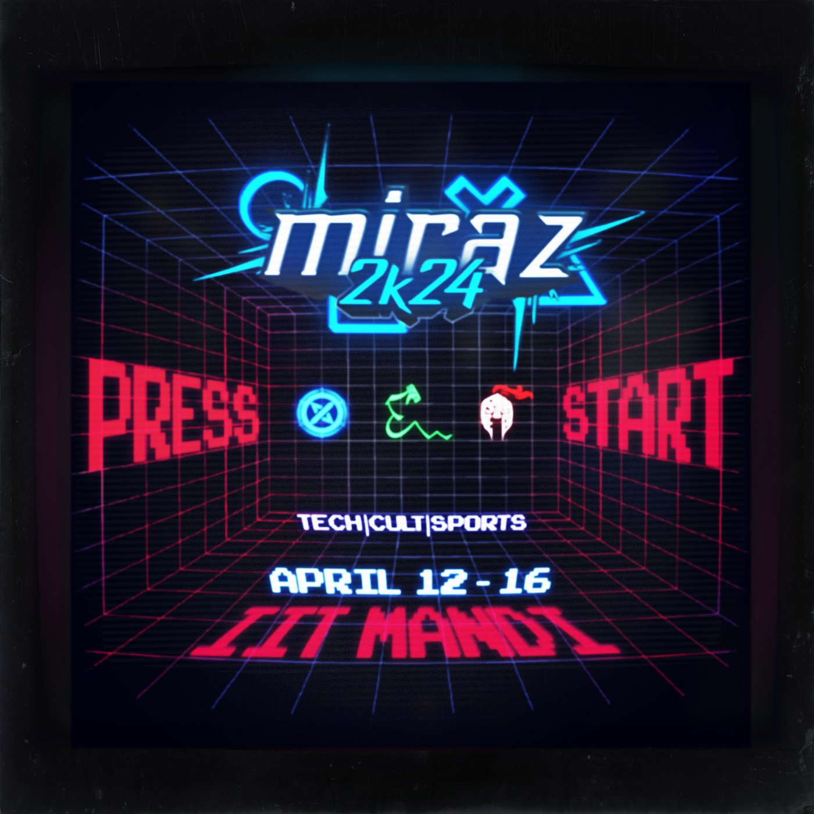

Projects

Agent-Directed Product Build
LF2 Blue — Zero-Dependency GNOME Theme
Directed an AI agent end-to-end to build and ship a standalone custom Linux desktop theme + installer with rollback. Led scoping, review, and debugging across v0.2 → v0.3.
View project
Design & Brand Systems
Miraz 2024 — Design Works
Led 28 volunteers to ship one fest identity across 3 verticals of cultural, sports, and tech events: 90+ Figma assets for 72 events, merchandise, and web — built on reusable components and a shared design system.
View projectSkills & Tools
Product Management
Product Roadmapping
User Story Writing
Agile Methodologies
Sprint Planning
A/B Testing
Competitor Analysis
Business & Analytics
Business Analysis
Data Analysis
Strategic Thinking
Decision Making
Tools & Technologies
Jira
Power BI
Tableau
MySQL
Python
Figma
LLM APIs (OpenAI/Claude)
Prompt Engineering
Education
B.Tech, Electrical Engineering
- Machine Learning & Introduction to Deep Learning
- Probability & Statistics
- Engineering Economics
- Computation & Data Science
Certification: Become a Product Manager: Learn the Skills & Get the Job — Cole Mercer
Leadership & Activities
Music Club, IIT Mandi — Core Team Member
Miraz IIT Mandi — Design Head
- Led a team of 28 volunteers to define, design, and deploy a unified visual theme and shared Figma design system across the fest.
- Designed 90+ Figma assets — posters for 72 events, artwork, merchandise, promotional content, and fest websites.
- Built reusable Figma components, styles, and prototypes for faster delivery and consistent brand identity across all assets.